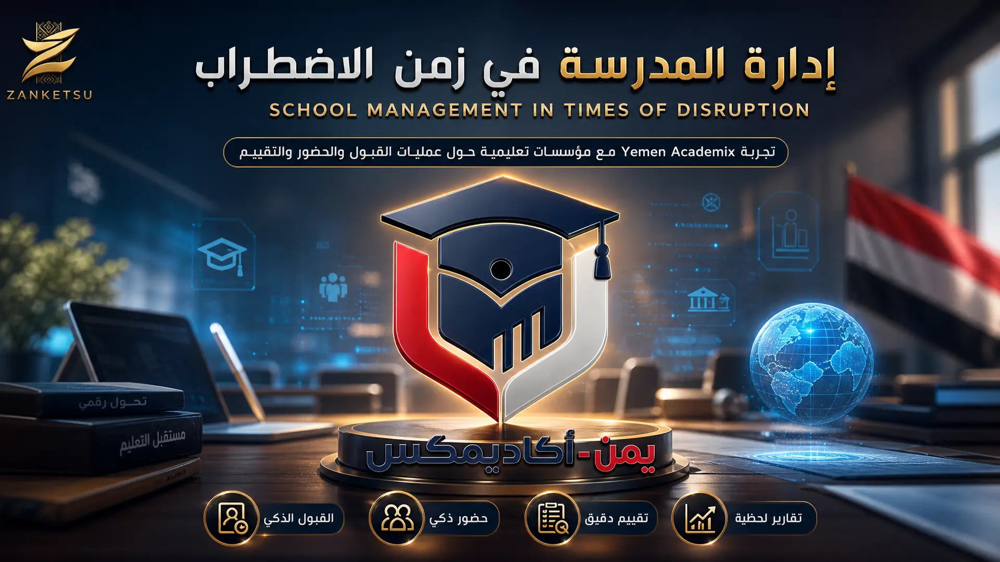

إدارة مدرسة في اليمن اليوم لا تشبه إدارة مدرسة في أي سياق مستقر آخر. فمدير المدرسة لا يواجه فقط التحديات المعتادة المتعلقة بالمناهج والطلاب والمعلمين، بل يواجه في الوقت نفسه بيئة عمل شديدة الصعوبة: انقطاعات متكررة في الكهرباء، اتصال إنترنت غير مستقر، تدهور اقتصادي يفرض ضغوطاً يومية على الفريق الإداري والتعليمي.
مشكلة انقطاع الكهرباء وحدها كافية لتوضيح حجم التحدي. فقد شهدت فترة الامتحانات النهائية انهياراً يكاد يكون كاملاً في خدمة الكهرباء، بصورة انعكست بشكل مباشر على أداء الطلاب داخل قاعات الامتحانات. المدارس في المناطق الريفية تعاني بشكل خاص من هذا الانقطاع، إذ أثر بشكل مباشر على إمكانية استمرار الدراسة في ساعات المساء، خصوصاً بالنسبة للفتيات.
إلى جانب أزمة الطاقة، تواجه المدارس اليمنية أزمة اقتصادية عميقة تنعكس مباشرة على الجهاز التعليمي والإداري. المعلمون في بعض المناطق لا يتسلمون رواتب منتظمة منذ سنوات، بينما يعاني آخرون من تراجع كبير في القيمة الفعلية لرواتبهم نتيجة انهيار العملة المحلية.

في ظل هذا السياق مجتمعاً، جاءت تجربة نظام Yemen Academix الذي جُرِّب فعلياً في أكثر من أربعين مؤسسة تعليمية داخل اليمن. النظام يستمر في العمل والتسجيل حتى في لحظات انقطاع الإنترنت، ثم يتم مزامنة البيانات تلقائياً فور عودة الاتصال، دون أن يفقد المدير أو المعلم أي معلومة أو يضطر لتكرار العمل من جديد.
القيمة الحقيقية لمثل هذا النظام لا تكمن فقط في تسهيل المهام الإدارية اليومية، بل في تخفيف عبء إضافي عن كادر تعليمي وإداري يتحمل بالفعل ضغوطاً كبيرة. حين يقل الوقت والجهد المستهلك في متابعة الحضور يدوياً أو تنظيم ملفات القبول ورقياً، يصبح بإمكان المعلمين والإداريين تركيز طاقتهم على التعليم نفسه.
تجربة Yemen Academix في أكثر من أربعين مؤسسة تعليمية تقدم نموذجاً مهماً لكيفية التعامل مع التحول الرقمي في سياقات هشة ومضطربة، حيث لا يكون السؤال هو أي نظام يقدم أكثر الميزات، بل أي نظام يستطيع الاستمرار في العمل فعلياً رغم كل الظروف المحيطة به.
تواصل ومتابعة ZANKETSU
اختر المنصة أو قناة التواصل التي ترغب بزيارتها